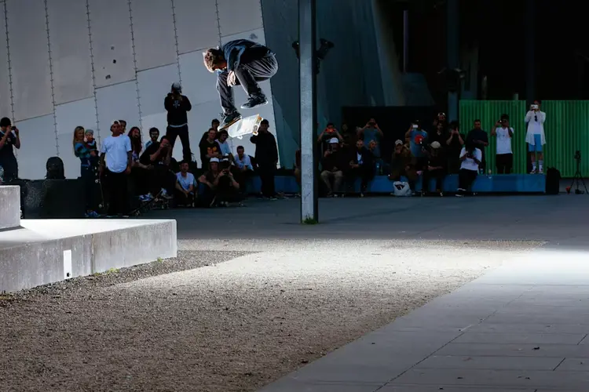
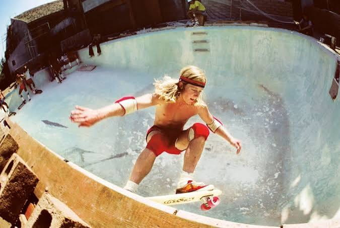
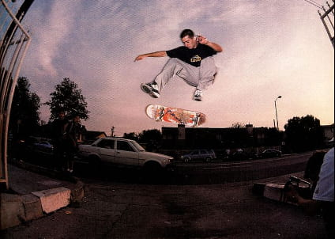
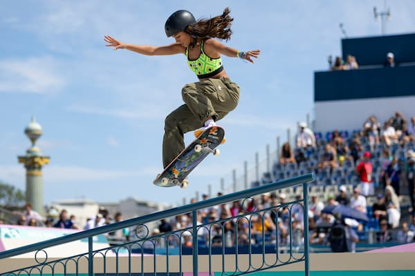

01 — Origins
A brief history of skateboarding

-
1950s
Sidewalk surfing
California surfers looking for something to do between swells nailed roller-skate wheels to wooden boards and took to the sidewalks. It had no name yet, and no rules — just surfing's footwork translated to pavement.
-
1970s
Urethane and the Z-Boys
Urethane wheels replaced clay and metal, finally giving skaters real grip. In drought-emptied Los Angeles backyards, the Zephyr team — the Z-Boys — poured their surf style into empty swimming pools and invented vert skating almost by accident.

-
1980s
The vert boom, then the street pivot
Skateparks rose and fell with insurance costs, so skaters took the ramp tricks they'd learned back to the streets. The ollie — a no-hands jump — became the technical seed from which nearly every modern street trick would grow.
-
1990s
Street skating goes technical
Curbs, stairs, and handrails became the new terrain. Flip tricks multiplied, video parts replaced contest wins as the measure of skill, and skate videos built a DIY media culture of their own.

-
2000s
Mainstream and the X Games
Televised competitions and video games introduced skateboarding to people who had never touched a board, turning a subculture into a global industry without fully sanding down its edges.
-
2020s
The Olympic stage
Skateboarding debuted at the Tokyo 2020 Olympics, putting street and park skating in front of the widest audience the sport has ever had — a long way from a plank with roller-skate wheels.
